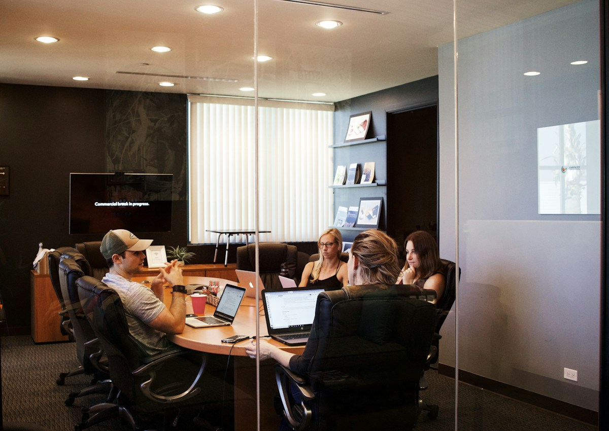

Digital-мокап для презентаций, лендингов и продуктовой упаковки.
Абстрактные 3D-формы помогают создать premium-ощущение и визуальный объём.
Серия мокапов должна выглядеть как единая система
Один красивый мокап помогает показать продукт. Серия мокапов помогает построить целую визуальную систему: презентации, лендинги, карточки, social-контент и рекламные материалы начинают выглядеть согласованно.
Мокап-серия
Серия брендовых мокапов для digital-упаковки: экраны, product scenes, презентационные кадры, social-форматы и рекламные визуалы в одном стиле.
Одинаковая логика — разные носители
Каждый мокап может быть разным по композиции, но все они должны иметь общие правила: свет, угол, плотность кадра, фон, цветовой диапазон и уровень детализации.

Контекстный мокап показывает продукт в рабочей среде и помогает быстрее объяснить сценарий использования.
Атмосферные кадры добавляют бренду визуальную глубину и ощущение дорогой digital-упаковки.
Новые материалы собираются быстрее
Когда мокап-система уже есть, команда может быстрее создавать новые презентации, лендинги, social-посты и рекламные материалы, не начиная каждый раз с нуля.
Что входит в серию
Экранные мокапы, product scenes, презентационные кадры, social-варианты, баннерные композиции и правила визуальной консистентности.
Бренд выглядит цельно во всех материалах
Серия мокапов помогает быстро выпускать новые digital-материалы, не теряя общий визуальный стиль.